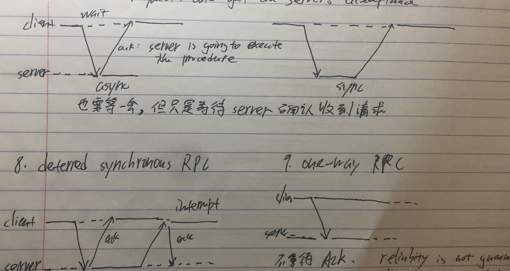

Introduction
Persistent v.s. Transient Communication
Persistent: Node A sends a message to node B, and node B is offline. A node C (C can be A) will store this data and send to node B when B is online.
Node A sends a message to node B. If B is offline, then the message is dropped.
Synchronous vs Asynchronous: blocking vs. Non-blocking
RPC (Remote Procedure Call)
Andrew Birrel and Bruce Nelson (1984) design a RPC system called Lupine.
- Allow machine (process) A to call machine (process) B's function
- Message passing is hidden from programmer, the program A calls the function with same name and parameters. (But inside the function, it sends message to machine (process) B)
- RPC system can automatically generate these functions (stub)
Client is actually call the client's stub, client's stub sents (marshalled) message to the server, the server's stub receives the message and call the server's implementation
Difficulties
- Marshalling: How to transfer pointer in C.
- Different machine architecture: e.g. big endian vs little endian
Improvement
Asynchronous RPC: in some case, the client does not a result from the server, .e.g return void. The client just wait for a server's ack. Not wait util the executation finished.
One-way RPC: the client just sends request, does not care wheather the server receives or executes.
Defered synchronous RPC: Same as the asynchronous RPC, but after the server finished, the server will active send back a interrupt to the client.

IDL (Interface Description Language)
IDL is a descriptive language used to define the function interface. Some RPC systems, e.g. Linux RPC and Apache Thrift, use IDL to generate Stub.
IDL is programming language independent.